Oddíl cykloturistů z Kutné Hory. Na kole, na vodě, pěšky i na běžkách – už od roku 1979.
Přidejte se k nám Prázdniny na koleJsme oddíl cykloturistů z Kutné Hory, který v roce 1979 založil Jaromír Krtička. Dnes nás vedou manželé Lenka a Lukáš Podolákovi. Jezdíme na kole, splouváme řeky na nafukovacích lodích, chodíme po krásách naší vlasti a v zimě se z nás stávají přátelé bílé stopy.
Během roku pořádáme jednodenní i vícedenní akce – pro členy oddílu a jejich rodiny i pro širokou veřejnost. Sejde se u nás parta od předškoláků až po aktivní důchodce a platí jediné pravidlo: kolo sbližuje.

Každý rok se opakují čtyři akce, na které se těšíme nejvíc. Všechny jsou otevřené i pro veřejnost.
Týdenní putování na kolech s lidmi z celé republiky – každý rok jinou krajinou, s přejezdy mezi ubytováními. Pořádáme ho už přes 40 let. Podrobnosti →
Jarní procházka po Kutné Hoře a okolí s odborným výkladem, vhodná pro všechny – od miminek v kočárku po zdatné osmdesátníky.
Zimní výjezdy na běžky, třeba do Janských Lázní, pro členy oddílu i širokou veřejnost.
Sváteční procházka, která každý rok vytáhne od stolu 60–70 milovníků turistiky – ani mráz je neodradí.


Co jsme v posledních letech zažili. Fotky najdete níže ve fotogalerii, čerstvé zprávy z akcí na našem Facebooku.
Fotky z našich akcí. Kliknutím otevřete album, listovat můžete šipkami nebo přejetím prstem.
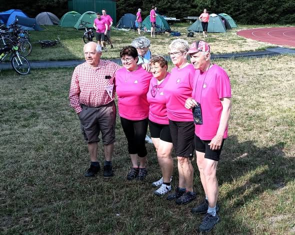
Prázdniny na kole – Šumava a Pootaví59 fotek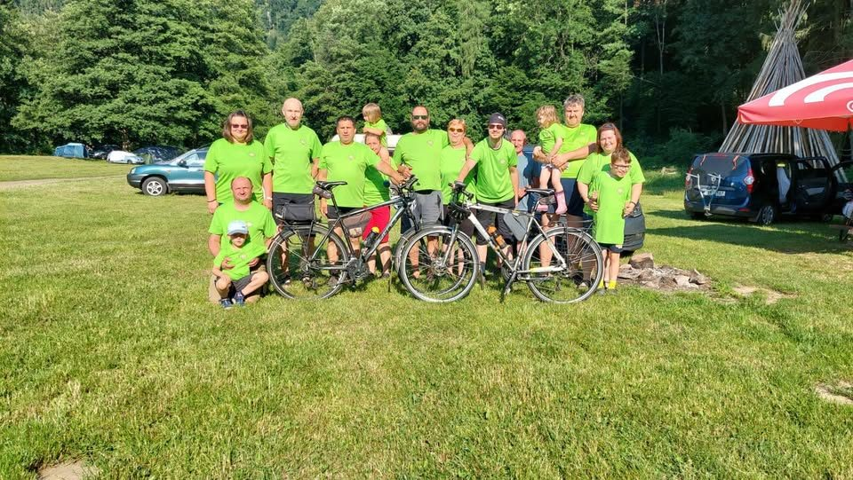
Potštejn6 fotek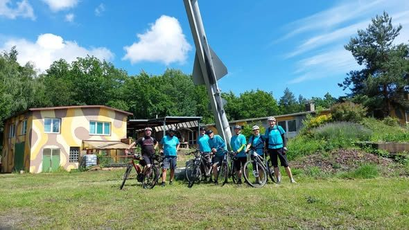
Peklem za Arabelou5 fotek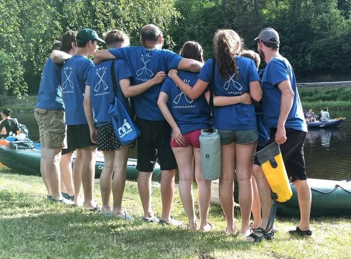
Víkend na Vltavě5 fotek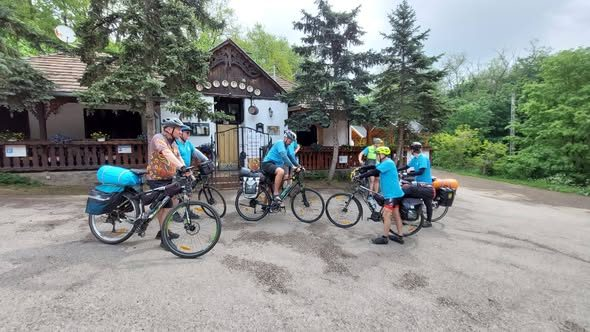
Maďarsko a kousek Slovenska5 fotek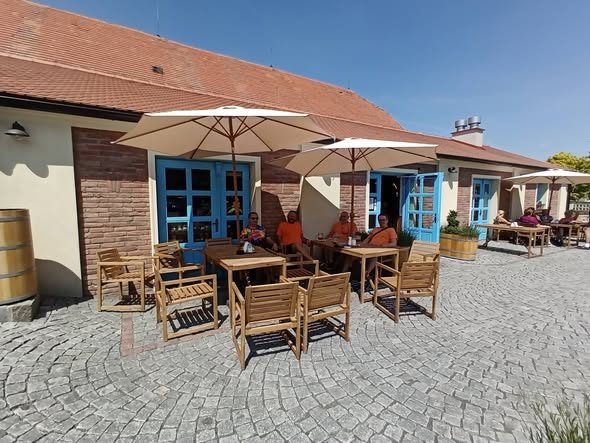
Jarní cykloakce4 fotky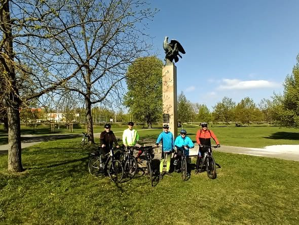
Okolo Kuňky5 fotek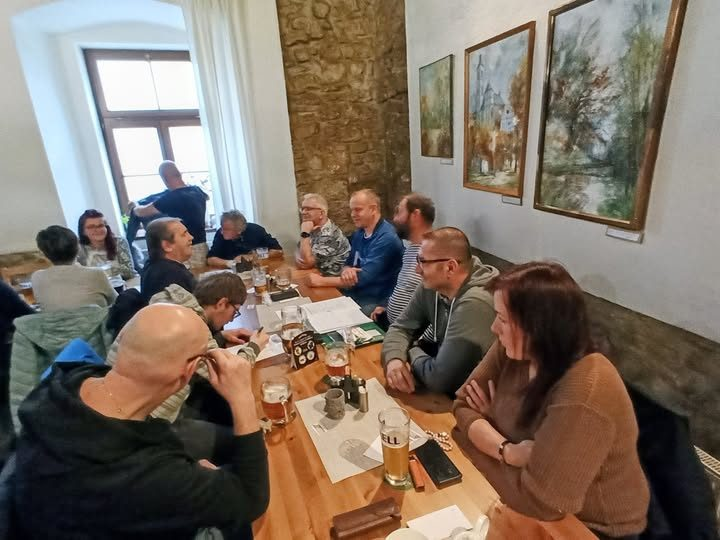
Zahájení sezóny v Kotoru1 fotka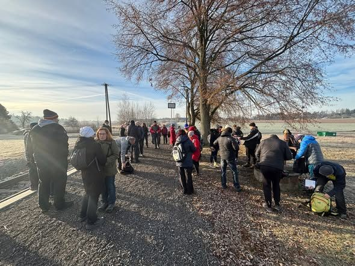
Štěpánská vycházka5 fotek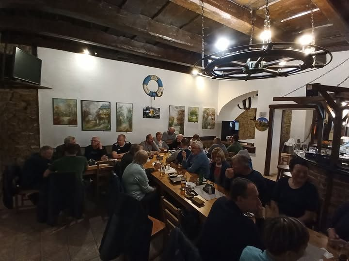
Podzimní schůze1 fotka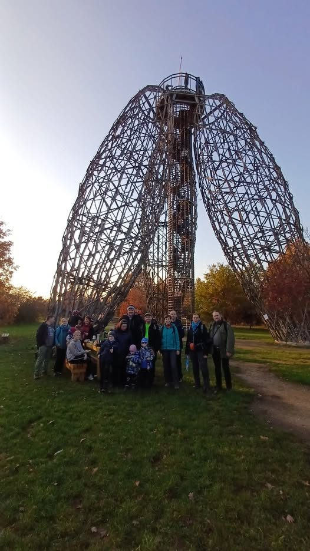
Podzimní Praha1 fotka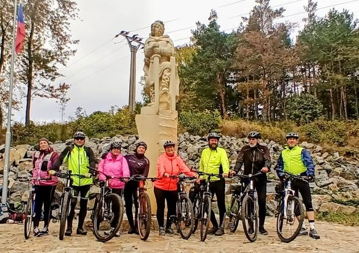
Malínský křen5 fotek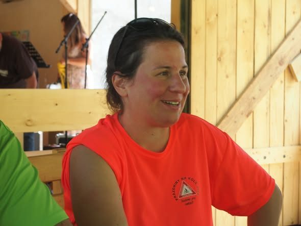
Prázdniny na kole – Vysočina a jižní Morava5 fotek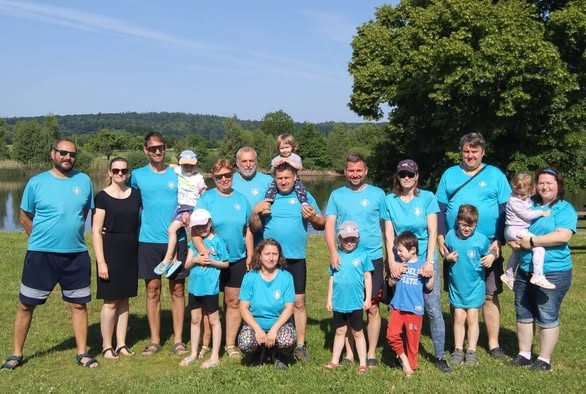
Rodinný víkend u Telče5 fotek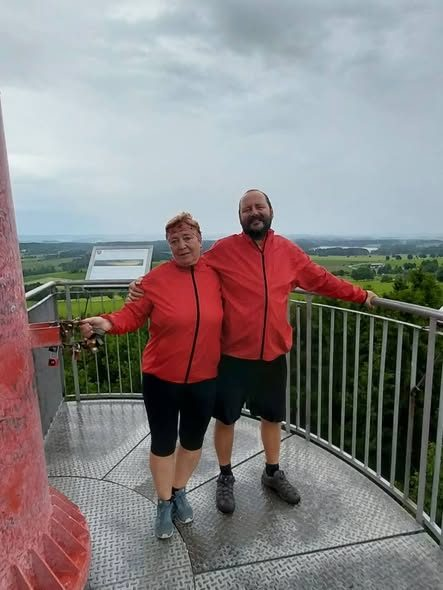
Na kole na Rosičku5 fotek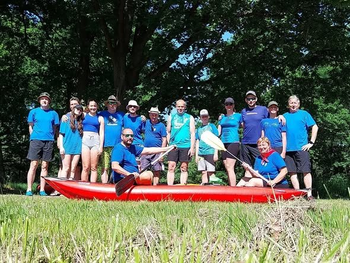
Lužnice u Soběslavi10 fotek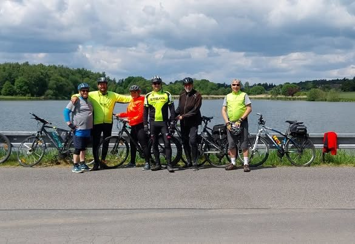
Voděradské bučiny5 fotek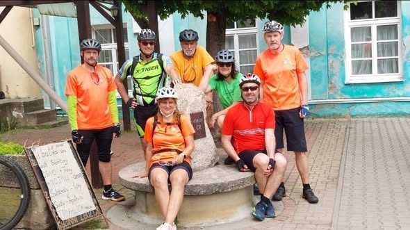
Vepříkov5 fotek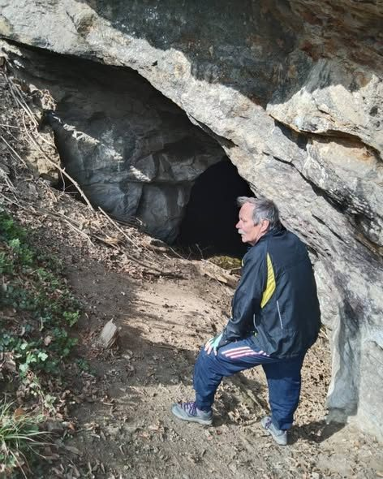
Jeskyně a brody na okrese5 fotek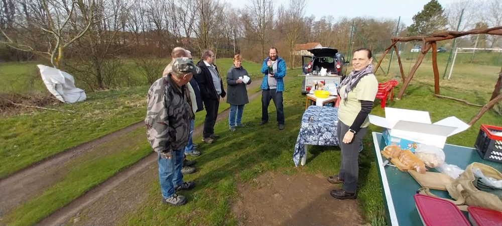
20. zahájení turistické sezóny1 fotka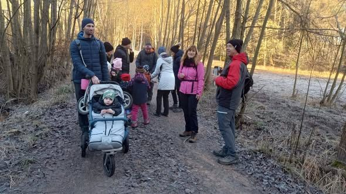
Štěpánská vycházka5 fotek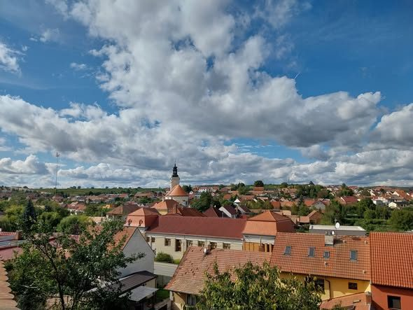
Břeclav a okolí5 fotek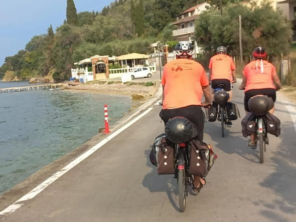
Řecko a Albánie5 fotek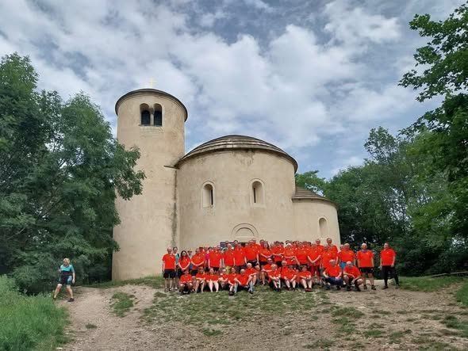
40. ročník Prázdnin na kole19 fotek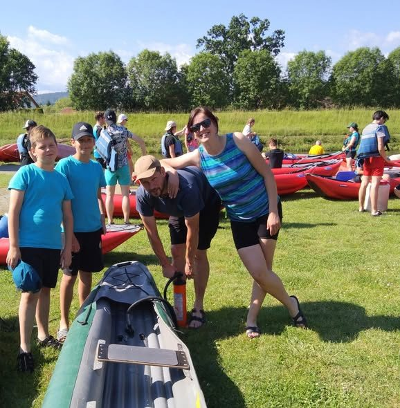
Otava5 fotek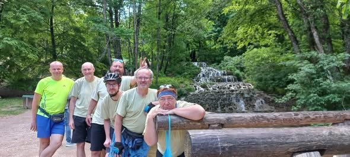
Pepřové hory u Egeru5 fotek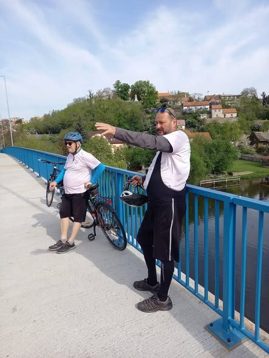
Na Vinici bez vinice6 fotek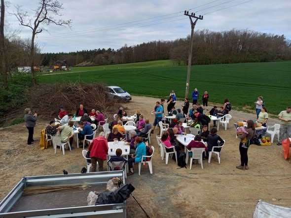
Zahájení turistické sezóny5 fotek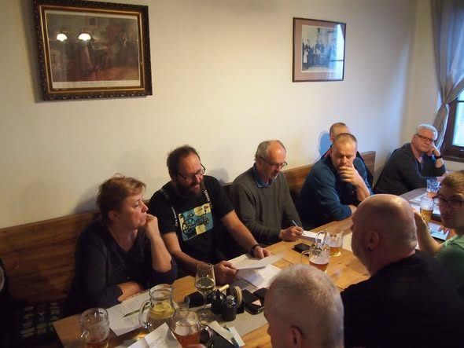
Jarní schůze5 fotek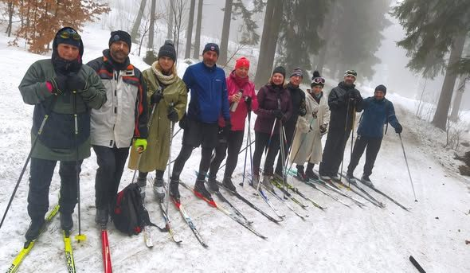
Na běžkách v Hraběticích4 fotky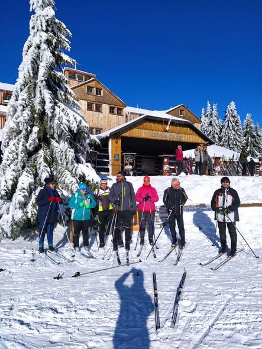
Janské Lázně5 fotekKdo chce, může se přidat – na jednu akci i natrvalo. Nepotřebujete závodní kolo ani kondici sportovce, stačí chuť jezdit, poznávat a užít si to s dobrou partou.
Dvakrát do roka se scházíme na oddílové schůzi v restauraci Kotor v Kutné Hoře, kde představujeme plán akcí. Pokud bydlíte v Kutné Hoře nebo okolí a zaujalo vás to, klidně přijďte mezi nás.
Termíny akcí a fotky průběžně zveřejňujeme na Facebooku.